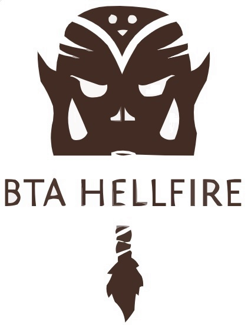
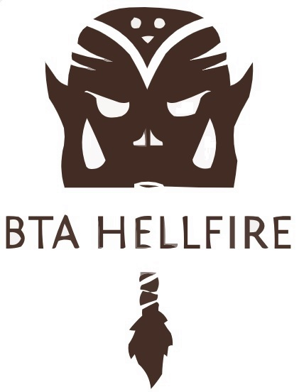

Bienvenido a BTA HELLFIRE
Únete a la aventura. Vive la Leyenda. Conviértete en héroe.
Bienvenido a BTA HELLFIRE, donde el mundo de Azeroth cobra vida como nunca antes. Entra en un reino donde la fantasía y la comunidad crean una experiencia de juego sin igual. Con una calidad inigualable y una comunidad excepcional, BTA Hellfire destaca como el principal servidor privado para los entusiastas de World of Warcraft.
Calidad inigualable
Nuestro compromiso con la perfección ofrece una experiencia de juego impecable y atractiva. Desde instancias meticulosamente programadas hasta entornos de alta fidelidad, tu viaje por Azeroth será legendario.
Una comunidad sin igual
El corazón de BTA HELLFIRE reside en nuestra vibrante, diversa y acogedora comunidad. Forja lazos duraderos, forma equipo en emocionantes misiones y comparte las historias de tus gloriosas batallas. Aquí, cada jugador forma parte de nuestra épica saga.
Características que te mantendrán enganchado
Experiencia Blizz: Un juego fiel al original.
Mejoras personalizadas: Características personalizadas que mejoran la jugabilidad.
Desarrollo activo: Actualizaciones regulares para un mundo de juego dinámico.
Soporte Premium: Soporte dedicado a todos los jugadores.
Eventos comunitarios dinámicos: Diversión sin fin con nuevas experiencias.
Seguro y estable: Juega sin interrupciones con total tranquilidad.
¿Listo para sumergirte?
Embárcate en tu aventura BTA HELLFIRE hoy mismo. Únete a un mundo donde las leyendas cobran vida y cada jugador es el héroe de su propia historia. Es hora de que se desarrolle tu historia épica.
Descargar el cliente